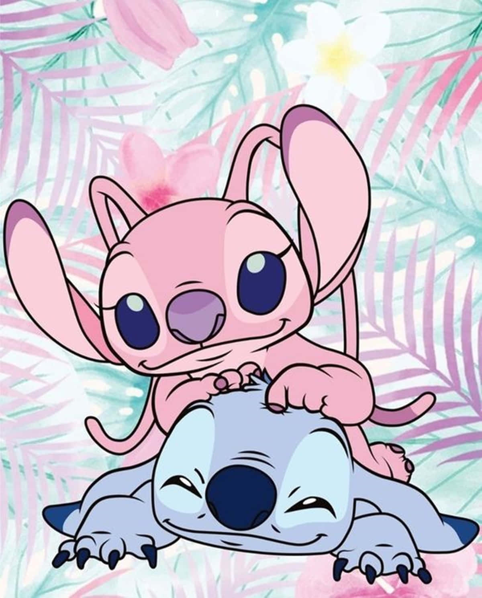

Para ti
No sé exactamente lo que sientes, aunque sé que te duele lo que está ocurriendo. Recuerda que no estás sola. Deja de lamentarte y levanta la frente por esa niña, que es el amor de tu vida; mírala y piensa: «Vamos, María, tengo que seguir adelante por ella», para darle un hogar estable y todo lo que quiera y necesite. También dale gracias a Dios porque tienes a alguien que pudo abrirte la puerta para evitar que se quedara en la calle.
Quizá no tengas internet donde estás, y tal vez la persona que te acompaña solo pueda ayudarte con un abrazo que te tranquilice un poco. Pero, si necesitas hablar con Justin, hazlo, sin importar lo ocupado que esté. Confía en él. No tienes obligación de hacerlo, pero tampoco deberías sufrir sola para siempre.
Para terminar, solo quiero decirte que no pierdas la esperanza ni la fe que siempre has tenido en Dios. Sé que estás ocupada o que, por lo sucedido, quizá no quieras contestar el teléfono para no escuchar los insultos de la gente. Si puedes denunciar lo ocurrido o tomar alguna medida, hazlo: lo que te está pasando es una injusticia. No te molesto más.